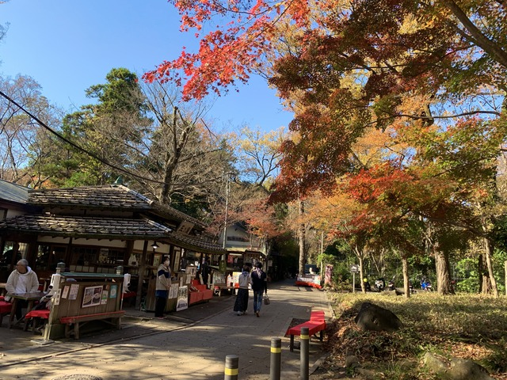

About Me
Hello! I'm Ryota Takenaka, a third-year Computer Science student at Tokyo University of Agriculture and Technology (TUAT). I am currently studying abroad at Institut Teknologi Bandung (ITB) in Indonesia.
Where I'm From
Photo Source: Mitaka Tourism Official Site
I was born and raised in Chofu City, located in the western part of Tokyo, Japan. It’s known for its peaceful residential atmosphere and the beautiful Jindaiji Temple. Chofu is close to central Tokyo, yet it still has a calm and friendly local vibe — so it is a good balance between nature and city life.
Who I Am
Outside of academics, I love traveling, playing bouldering, going to the hot springs, and experiencing different cultures.
If you’d like to connect or chat, feel free to reach out!